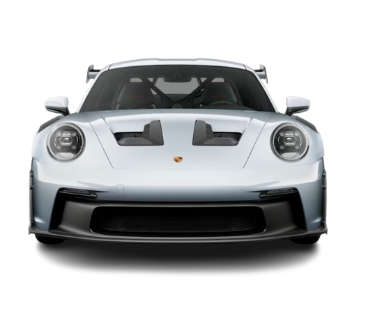

PORSCHE
GT3 RS
BY
Yashash


Every athlete knows the absolute willingness to question everything is crucial to achieving a top performance. With this attitude, Porsche continues to push back the boundaries of what is possible.
Wet asphalt, tight corner combinations, personal driving style: there are many factors to consider in motorsport for an optimal setup. That's why the steering wheel with three additional mode switches offers even more options for adapting chassis control systems to the actual driving conditions.

Mild suspension geometry tweaks and components have trickled down to the GT3s from the RS, and both cars, regardless of transmission, get a shorter final drive ratio for quicker starts. A Weissach Package is available for the GT3 that features extensive use of CFRP (Carbon Fiber Reinforced Plastic) for the roof and aero elements as well as specific suspension components. Leather and Race-Tex upholstery touches augment the interior.
The GT3 Touring offers the Lightweight (Leichtbau) Package with similar CFRP suspension bits, forged magnesium wheels, and a lightweight battery. Finally, rear seats, unavailable in the previous year, return to the option list on the GT3 touring.